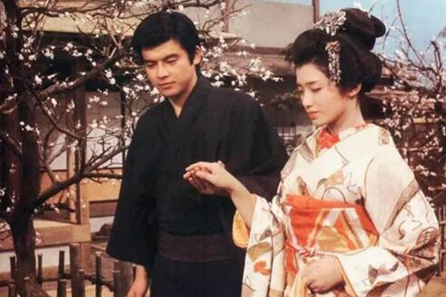

背景：1、作品中的 “我”和熏子拥有一段还未开始就以结束的初恋，作品外的作者川端康成同样在十九岁时的伊豆旅程中为一个十四岁的小舞女魂牵梦萦（1918年），怀着“不堪忍受的自怜” 在以后的十年间重返伊豆，寻找最初的感情。《伊豆的舞女》发表于作者伊豆之行的八年后（1926年）。1925年，川端康成与松林秀子（川端秀子）邂逅，次年正式结婚。
问题：如果川端康成真的爱小舞女，为什么在后来的旅行中又相继与伊藤初代、松林秀子相爱呢？小舞女之于川端康成，熏子之于“我”，究竟意味着什么呢?
最美的爱情是灵魂的邂逅，但这一切终究逃不过现实的选择。
初恋是不食人间烟火的。少男少女的爱恋超过人世间的衣食住行、柴米油盐，超越了地域、文化、阶层，所以永远值得回味。可是这也注定是虚无缥缈的，无法走进俗世的烟火当中。像所有令人扼腕的爱情一样，他们，也只能是彼此生命中的过客，最后相忘于江湖。当轮船越开越远，她的告别声消隐于阵阵的海浪，她挥动的手臂渐成一个模糊的剪影，一切，只能留作他心中美丽的回忆。
书人与舞女的相遇，相识，只是短短的一段交集。就像是火车上的陌生乘客一样，也许旅途寂寞，会相互聊聊天，但谁也逃不掉是要到站的。当读书人因为旅费全部花光而不得不乘船回东京时，两个情窦初开的俊男靓女，都选择将最初的那份情愫深藏心底。他们之间没有牵手拥抱，连一次好好的告别都不曾有。读书人甚至都没有叫过舞女的名字。最后，他们不停地隔水挥手告别。
虽说他们最后分别，但同时他们又都是幸运的。舞女浅尝了爱情的滋味。读书人独自旅行的初因，忧郁，悲伤，孤单，寂寞，也全都在途中被舞女洗尽。“我”感到一切都融为一体了，开始自然地接受别人的好意，也自然地去帮助弱小。原本孤僻、内向，拒绝接触社会的“我”，心灵得到了彻底的净化。
读书人和舞女,他们相识于伊豆，相忘于伊豆！
电影的最后一个镜头是跳舞的熏子被一个醉醺醺的色汉搂住，电影就此戛然结束。
这就是日本的物哀美学，小说以悲与美为两种基调穿插在整部作品当中，淡淡的悲伤与优美的景色相结合，通过爱情无果之悲，情景交融之美，爱情纯真之美创造出一曲清新淡雅的哀歌。
男性凝视下的女性形象——以他者视角看薰子
不幸的家世及孤儿气质对女性的渴望与排斥。
川端在《少年》里描述了自己的性格:“我是在不幸和不自然的环境下成长的。因此, 我变成了一个顽固而扭曲了的人, 把胆怯的心锁在一个渺小的躯壳里。
在《伊豆的舞女》中, 川端也提到了自己的孤儿气质:“我已经二十岁了, 再三严格自省, 自己的性格被孤儿的气质扭曲了。”
弗洛伊德在《作家与白日梦》中对这一心理现象这样解读：“一个幸福的人从来不会幻想，幻想只发生在愿望得不到满足的人身上。幻想的动力是未被满足的愿望，每一个幻想都是一个愿望的满足，都是一次对令人不能满足现实的校正。”幻想的目的是对被移置精神层面的性本能作出替代性满足。现实生活中川端康成周围女性的缺位，使他在凝视的过程中寻求替代性满足，幻想着与被凝视者建立亲密关系。
一，我看故我在：凝视过程中的自我认同。
二，走向本真性的女性凝视。
三，看与被看的权力关系。
为何《伊豆的舞女》整本书中出现了那么多次水，如雨水、温泉、河流、泉水和泪水?
1.雨水
①推动故事情节发展。
②暗示主人公心境。
2，流水
①温泉：伊豆是温泉胜地，温泉可以消除疲劳，促进人与人间的交流，在文中“我”也是在与荣吉泡澡过程中得以敞开心扉，是一个巡回艺人与高校学生交谈的契机。
②河流、泉水：前者铺垫，后者照应。
3.泪水
泪水堪称本文的点睛之笔。小说的结局是“我”和薰子以泪水为引依依惜别，只能任泪水“簌簌地滴在书包上”，此情此景就成为了“我”旅途中最后一道难以忘却的风景。对“我”而言，故事最好的结束方式莫过于此，小舞女只是远离现实世界的一道深深打动“我”的风景。最终，一艘航船把“我”载回原先的人生轨迹，但重新返回的“我”不再带有孤儿根性，扭曲的心态得到治愈。“我”的人生态度因小舞女乐观积极的心态，体贴细微的爱而深受影响，幼年缺失关爱的干涸心灵得到滋润。爱让“我”理解了生命的真谛，让“我”封闭的心灵得以敞开，从此也让“我”的生命重放异彩。
——为什么伊豆的舞女要是那样悲剧式的结局
悲剧的美感大于喜剧，这个结论必须基于社会语境来说。当前的艺术美感更能从悲剧中体现出来，原因是：如今的世界上有太多的快乐。
我们身处崇尚消费享乐的时代，商业文化创造了太多的快乐假象。铺天盖地的广告、娱乐节目……这种声色犬马的快乐带有很大的虚幻性和蒙蔽性，它依赖于人们对于生活中现实存在的痛苦的忘却和逃避。事实上，我们远没有看起来那么快乐。
作者的描写对象是上世纪二三十年代中下层卖艺人的凄苦生活。少女薰子一家人的经历也是当时日本下层卖艺人生活的真实写照：四处奔波，无依无靠。同名电影（1974年西河克己导演）中有这么一个桥段——男主和舞女一家人在驿站避雨的时候，他问驿站的老婆婆：那几个人今天会上哪儿歇脚？老婆婆说：谁知道那些卖艺的会在哪儿歇脚？哪里有客人他们就在哪里歇脚，谁让他们是卖艺的呢？只有四海为家了。我劝你呀，别和他们在一起，这样对你不好。从反映社会现实这一角度来说，《伊豆的舞女》的结局不会是大团圆的喜剧。
1. 悲剧能够给受众带来审美快感。
2.悲剧更贴近现实，符合当时的情境，因为一个合情合理的悲剧一定有其发生的现实语境，让受众更有代入感。
3.人们在悲剧中“体验”否定和失去的感受，人们经常会因为得不到某种想要的东西或者珍贵的东西丢失，而对它产生更深的欣赏和眷恋，对它的价值更加肯定。